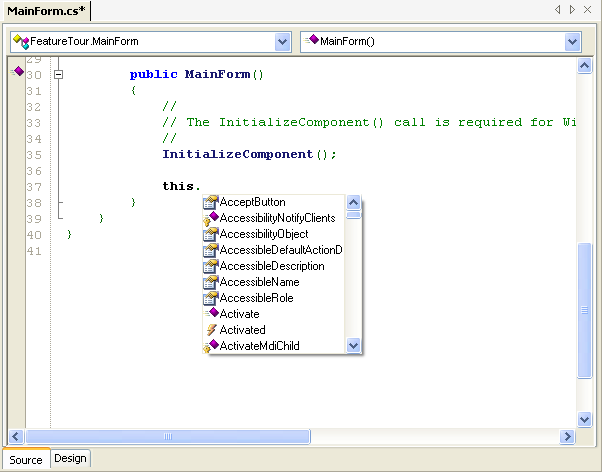
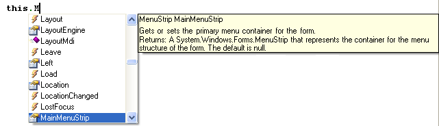
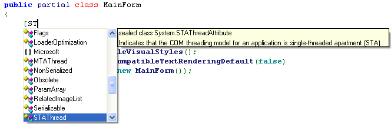
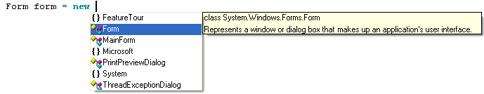
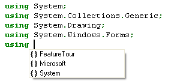
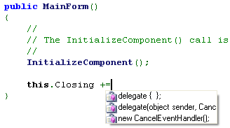
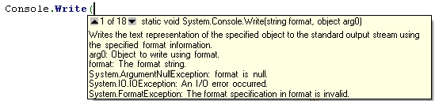
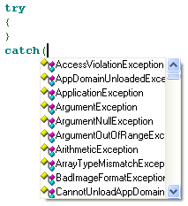

SharpDevelop provides code completion as you type. This helps you quickly find an object's method, property or event and then insert the code into the text editor.
Typing the dot character "." after an object's name will automatically bring up a list of methods, properties and events that are available for that object.

Typing the first few characters of the method, property or event will select the matching item. Pressing the Tab key will complete the code by inserting the currently selected item into the text editor.

Whilst you are typing in attributes you will see code completion.

Or when typing the space character after the new keyword when creating a new instance of a class.

Or when typing in a using statement.

Or writing code to connect an event handler.

Typing in the opening parenthesis of a method will show you its parameters and allow you to see any overloaded methods it has. The up and down cursor keys can be used to view the different overloaded methods.

Typing in the open parenthesis of a catch statement will show you a list of exceptions.
